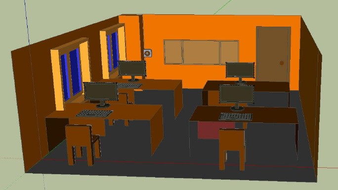

Для определения тех или иных параметров в системе координат используют деления, принимающие те или иные значения. На рисунке, представлена простейшая система координат X,Y с делениями. Деления в системе координат могут иметь самую различную размерность. Поскольку на рисунке не указаны единицы измерения одного деления, ты можешь взять абсолютно любое значение, например: миля, пиксель, тугрик, попугай.
Также важно иметь ввиду, что одно деление, не обязательно соответствует одной единице, и также может включать в себя несколько таких условных единиц.
В SketchUp, орудуя уже знакомыми инструментами и приемами работы с ними, смоделируй любой объект в помещении, будь то парта, стул, кресло, шкаф или любой другой предмет.
1. Для начала, узнай примерные параметры измеряемого объекта, измерив его габариты при помощи линейки или рулетки, ориентируясь на значения, заданные преподавателем.
2. В SketchUp, соблюдая размеры и пропорции, при помощи примитивов, построй заданный объект.
3. Для уточнения размеров в SketchUp, следует использовать инструмент «Рулетка»
Большинство людей, услышав слово "градус", сразу вспомнит про температуру на улице. У кого-то возникнут ассоциации с одноимённой группой, а другие подумают о пресловутых 36,6˚ на термометре. Однако в трёхмерном проектировании термин "градус" имеет другое значение.
Перемещение некоего объекта, например, попугая из точки A точку B, ты измеряешь в сантиметрах, метрах, километрах и т.д. Есть также иное изменение положение объекта в пространстве – поворот попугая влево, вправо, вверх, вниз, наискосок, наклон крыла относительно остального тела - это параметры, которые измеряются в угловых градусах. Инструмент для измерения углового градуса называется транспортир.
В SketchUp поворот того или иного объекта происходит при помощи транспортира (инструмент «Повернуть»).
1. Сначала нужно выбрать плоскость, в которой будет поворачиваться объект. Затем, необходимо крутить транспортир до тех пор, пока он не примет такое положение в пространстве, относительно которого необходимо будет вращать объект.
2. Щелкнуть левой кнопкой мыши, чтобы зафиксировать положение транспортира.
3. Движением курсора, изменяется положение объекта в пространстве.
4. Проделай эти шаги на любой примитивной модели.
Текстура – картинка, которая накладывается на определенный трехмерный объект, с целью придания ему некоторого визуального сходства с тем или иным материалом. Ниже приведены примеры текстуры металла, дерева и камня
В SketchUp имеется стандартный набор текстур, которые можно применить для частичной имитации того или иного материала, на поверхности объекта. Для этого используй инструмент заливка, позволяющий закрасить объект одним любым цветом, либо наложить на него текстуру.
Выбери инструмент «заливка». В закладках выбери материал для текстуры (вариаций множество). Произведи заливку любого объекта.
В трехмерном моделировании, крайне важно понимать, как виден объект на картинке, в каком положении он находится, где располагается камера, и что видно в результате
В SketchUp, и в других программах 3D моделирования, важно понимать, как стоит располагать камеру относительно объекта, чтобы получить нужную картинку. Для проектирования моделей зданий, комнат, офисов и т.д., используют размещение камеры, позволяющее наблюдать расположение основных деталей. В художественном моделировании, на первое место ставится визуальная составляющая картинки, ее эффектность.
В SketchUp, вращение камеры по орбите, происходит при помощи зажатой средней клавиши мыши (колесико), и перемещения самого курсора. Перемещение камеры в пространстве происходит посредством инструмента «Панорама».
Рендеринг – это получение уже готовой картинки, из заготовки, т. е. модели, созданной в том или ином трехмерном редакторе.
В SketchUp, как таковой рендеринг отсутствует, т.к. это программа для создания эскизов, трехмерных набросков. Но можно получить эффект тени, света, блеска и т. п.
Чтобы добиться таких визуальных эффектов в SketchUp, необходимо сделать следующее:
1) Во вкладке Вид поставить галочку на пункте «Тень»
2) В той же вкладке Вид, поставить галочку на пункте «Дымка». Как показано на рисунке.
Для выполнения этого задания тебе понадобится измерительная рулетка. С её помощью измерь компьютерный класс и создай 3D модель.
Используя рулетку измерь любую комнату у себя дома и построй её 3D модель.
Камынин А.И. Учебное пособие по курсу "Базовая подготовка" 2017 ©